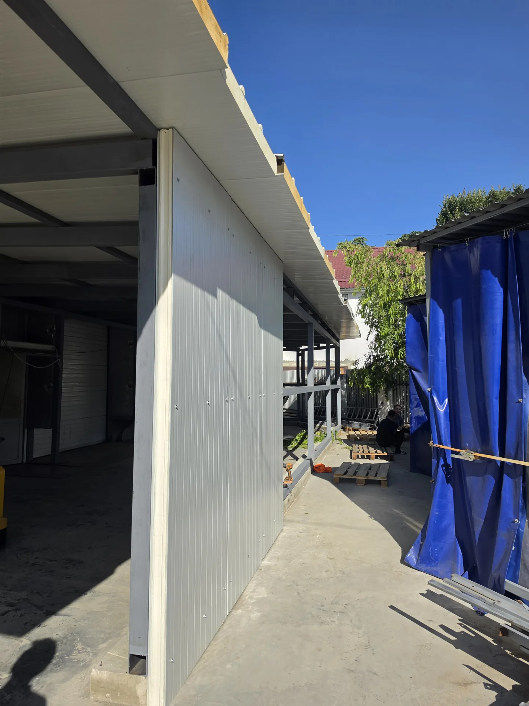
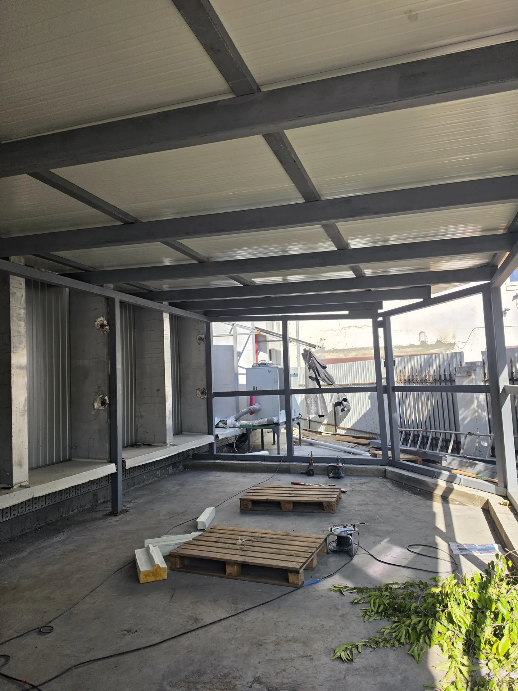

Ce vrei să construiești?
Alege serviciul. Noi te ajutăm cu următorul pas.


De la fundație la finisaj
O singură discuție pentru un proiect bine definit.
Pentru casa ta
Construiești, renovezi sau amenajezi curtea? Începem cu ce ai nevoie.
Pentru compania ta
Lucrări de execuție pentru oficii, spații comerciale și obiective industriale.
Colaborări B2BDin șantierele noastre
Etape și detalii din lucrările Condr Grup.







Proiecte în Chișinău
Descoperă lucrările și amplasamentele noastre.
Se încarcă harta. Proiectele sunt disponibile în listă.
Reparația capitală a unui oficiu pe strada Grenoble 259/9.
Vezi proiectulTurnarea unei curți de 500 m² și montarea unui angar de 121 m² pe strada Feredeului 4.
Vezi proiectulLucrări de amenajare la cheie pentru restaurantul Bomond din Port Mall.
Vezi proiectulMarcajele indică adresa sau clădirea, nu intrarea în șantier.
Proiecte în Chișinău
Descoperă lucrările și amplasamentele noastre.
Curte & angar
Turnarea unei curți de 500 m² și montarea unui angar de 121 m² pe strada Feredeului 4.
Vezi proiectulBomond · Port Mall
Lucrări de amenajare la cheie pentru restaurantul Bomond din Port Mall.
Vezi proiectulHai să discutăm proiectul
Lasă-ne numele și telefonul. Revenim pentru detalii.